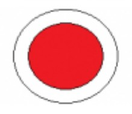

Atracţii turistice
Bastionul Apor
Este primul traseu marcat din Băile Tuşnad. Traseul turistic porneşte din mijlocul staţiunii, trece prin centrul orașului, pe lângă
izvoarele
Mikes şi Apor şi ajunge la marginea pădurii.
Aici se termină strada pavată, traseul continuă pe o potecă bine bătătorită. După cam 10 minute de mers, traseele marcate cu cruce roşie
şi punct roşu se despart.
Primul traseu, marcat cu cruce roșie (traseul nr. 10) duce la Situl Natura 2000 Tinovul Mohoș – Lacul Sfânta Ana, iar cel de al doilea,
marcat cu punct roșu, se
întoarce spre stânga şi continuă pe versantul Muntelui Surduc aproape pe orizontală. După cca. 10 minute de mers, la o altitudine de 701
m, se ajunge la Bastionul
Apor, construit ca punct panoramic în anul 1883 (de curând a fost restaurat și iluminat pe timp de noapte cu un panou fotovoltaic). După
punctul de belvedere drumul
se întoarce mai întâi spre dreapta, apoi spre stânga, ocolind izvoarele unui mic pârâu. Pe mica vale coboară o potecă marcată, care ajunge
în staţiune.

Marcaj: punct roşu. Durată: ½ – 1 h.
Distanţa de parcurs: 1,5 km.
Diferenţă de nivel: 68 m.